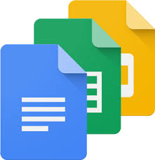
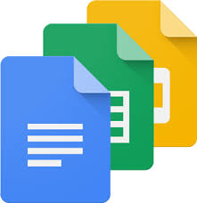
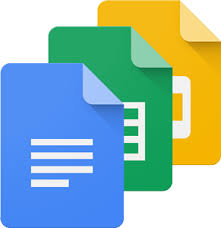

I am using IT tools to help me make and plan my website. I am using Trello and Visual Studio Code. Firstly I started using Trello where I began planning my website and the content I was going to put onto my website, this is useful so I dont forget anything and I have a plan of what to do and when to have it done by. I also have a review tab on my Trello board so that when I have completed tasks I can have someone look and review my content and give me feedback to tell me if I need to change, remove or add anything. I am happy with my use of Trello because it has helped me plan and organise my website.To make my website I am using Visual Studio Code to write the HTML and CSS. Visual Studio Code is very useful and easy for me to use, because I have already used it for python so I understand it already. Whilst I am writing my HTML and have done most of it I started a CSS file within the HTML file so that my website can be easily linked together and automatically shown on a web browser, which is very useful because whilst I am writing the syntax and changing it I can view the website on a browser. I am happy with Visual Studio Code also because it's very easy to use and link everything together so you have almost everything in one place.
The IT tools selected which are Trello and Visual Studio Code were very appropriate for my project because Trello helped me keep track, plan and organize my project so that i'm not falling behind or missing anything out and making sure I get feedback on my project after every task. Visual Studio Code is also really appropriate for my project because I can keep all the HTML and CSS in one file so that when I want to check my website on a browser it automatically adds the content I put in everytime i refresh the browser. Which is great because everything is linked and in one pace so that it's easy to access and use.
The strengths of my website is that it looks good, it is easy to read and use also my website has a theme and most pages look the same to keep everything simple. My website has two images on each page which is relevant to the information on my website, this makes sure my website isn't too plain and boring but also I only use two so that it isn't too much. To keep my website interesting I have a gif background which goes with the theme of the website so it isn't boring and just way too simple. The weakness of my website could be that most of the pages have the same layout which is what I wanted but some people may not like that. Overall I am happy with my website because it came out better than I thought it would because I am new to coding and never had done HTML, CSS before. I would not change anything on this website because this is what I wanted.
I could improve my website by adding extra things such as links to other pages or links on images. I could also add a contact me page at the end where I put my details on such as my email so that people who have seen the website and want to talk to me they can use that. Another improvement could be some more images or maybe positioning the images in different places on the website. Also I could add sound to a page to make it more interesting.
One outcome is to organise and combine information needed for web pages including different platforms. I have met the requirements for this outcome because I used Trello to organise what information I need and when I need it by, I did task by task and had each task reviewed so that I could put it into the done section so that I know I have completed the task and not have to worry about it and could move onto the next one. I used Google Docs to put all the information on that I need for my website so that everything is spell checked and makes sense, once reviewed and approved I know it is ready to be put onto the website. I also used Google Docs so that I can access this information when and where I want and I should not lose it. Another outcome is to make sure that there are error free pages that are fit for purpose. I have completed most of my pages and tested them by this stage and I have made sure that none of my pages have any issues or errors, all of my pages fit the purpose I need them to and match the criteria that was set.
